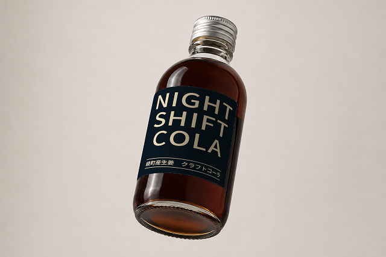
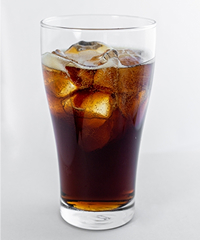
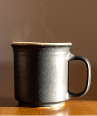
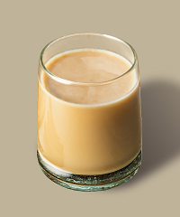
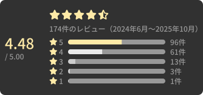

こんな夜、ありませんか？
- 休肝日を作りたいけれど、布団に入っても目が冴えてしまう…
- 水やお茶じゃ物足りない、大人が満足できる飲み応えが欲しい…
- お酒の力を借りずに、仕事終わりの脳をゆったり休ませたい…
お酒を飲まない夜にも
確かな満足感を

NIGHT SHIFT COLA
-
綾町産
生姜使用 -
容量
250ml -
杯数
約12杯分
綾町産生姜と6種のスパイスが香る
甘すぎない大人のクラフトコーラ
GABA・L-テアニン配合
ノンカフェイン・アルコール不使用
仕事終わりの一杯に
おすすめの飲み方
-

炭酸水割り（1:4）
炭酸の刺激とスパイスのキレ。ビールのような満足感。お酒を飲まない日のメインの一杯に。
-

お湯割り（1:4）
温かいスパイスの香りが部屋に立ち上ります。本を読みながらゆっくり楽しみたい夜に。
-

ミルク割り（1:4）
本格的な、チャイのような雰囲気。心地よい睡眠の前座を担うじんわりとした温もり。
お客様の声

-
Tさん（38歳・男性・会社員）
「仕事終わりにビールを飲むことが多かったのですが、平日は少し控えたいと思って購入しました。炭酸で割ると満足感があって、甘すぎないのがいいです。夜に飲むものとしてちょうどいいです。」
-
Kさん（42歳・男性・営業職）
「帰宅してからもスマホで仕事の連絡を見てしまうことが多く、なんとなく夜の時間がだらだら過ぎていました。これを炭酸で割って飲む時間を作ると、一日の区切りになる感じがして気に入っています。」
-
Aさん（45歳・男性・管理職）
「毎晩ビールを飲む習慣を少し減らしたくて購入しました。炭酸水で濃いめに割ると、かなり満足感があります。お酒を飲まない日の一杯としてちょうどいいです。」
テレビやメディアでも
紹介されました
-
MRT宮崎放送
-
UMKテレビ宮崎
-
宮崎日日新聞
-
ライフスタイルWebメディア
「ノンアルコールドリンク特集」
はじめての夜に
クラフトコーラキャンペーン
NIGHT SHIFT COLA
-
綾町産
生姜使用 -
容量
250ml -
杯数
約12杯分
よくあるご質問
-
Q
普通のコーラとどう違いますか？
A甘さ控えめで、生姜やスパイスの香りが特徴のクラフトコーラシロップです。希釈して飲むタイプで、一般的な缶コーラとは異なります。
-
Q
カフェインは入っていますか？
A入っていません。夜に飲むことを想定し、ノンカフェインで設計しています。
-
Q
スパイスは強すぎますか？
Aクラフトコーラが初めての方には、やや個性的に感じる場合があります。薄めに割るとマイルドになります。
-
Q
おすすめの飲み方はありますか？
A1日1杯を目安に、お好みに合わせてお召し上がりください。 シロップ20mlに対して、炭酸水120〜150ml程度で割るのがおすすめです。
-
Q
賞味期限・保存方法は？
A未開封時の賞味期限は製造日より6ヶ月です。直射日光・高温多湿を避け、常温で保存してください。開封後は必ず冷蔵庫で保存し、3〜4週間以内を目安にお召し上がりください。
保存方法・発送について
-
保存方法
製造日より6ヶ月（※未開封で、表示された保存方法により保存した場合）直射日光・高温多湿を避け、常温で保存してください。
-
開封後
開封後は必ず冷蔵庫で保存し、3〜4週間以内を目安にできるだけお早めにお召し上がりください。
-
沈殿について
原材料由来の成分が沈殿することがありますが、品質には問題ありません。よく振ってからお使いください。
-
発送時期
ご注文確認後、通常3〜5営業日以内に発送いたします。
-
土日祝・休業日
翌営業日以降に順次ご対応・発送させていただきます。
-
お届けまでの日数
天候や交通状況により、お届けまでにお時間をいただく場合がございます。発送完了時にお送りする追跡番号よりご確認ください。